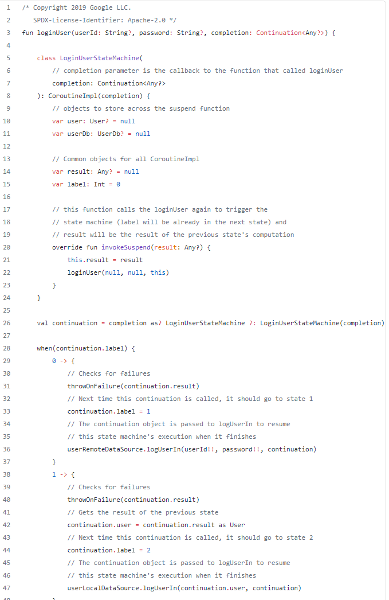

Kotlin 协程 挂起函数
本文将介绍Kotlin中协程有关的基本概念、以及挂起函数的工作原理。
背景
协程在kotlin中以官方的库出现，需要配合suspend关键词。而suspend因为只是语法的一部分，意味着至于suspend的具体实现，还有更大的弹性，不一定就要和协程一直绑定。suspend关键词类比Javascript的async/await，Continuation(稍后会说)类比Javascript的Promise，它们的出现，主要都是为了解决以前的编程语言中，对“异步”“同步”描述能力的匮乏。在这些概念出现前，“老”的编程语言中一般会以回调接口提供“异步”的编程，不断的异步回调接口实现，会引入嵌套，使得代码难看且不易于维护。
aAsyncAction(callback1{
bAsyncAction(callback2{
cAsyncAction(callback3{
})
})
})
优化的思路都是把其转为顺序调用。从一开始的响应式链式调用RxJava，类比Promise手动调用。将嵌套结构先抹平。
aAsyncAction()
.map({result1->
return bAsyncAction(result)
})
.map({result2->
return cAsyncAction(result)
}).observe()
aAsyncAction()
.then(result1 =>{
return bAsyncAction(result1)
})
.then(result2=>{
return cAsyncAction(result2)
}).
async function jsAsyncFunction(){
let result = aAsyncFunction()
result = bAsyncFuntion(result)
cAsyncFunction(result)
}
suspend fun kotlinSuspendFunction(){
val result1 = aAsyncFunction()
val result2 = bAsyncFunction(result1)
cAsyncFunction(result2)
}
如果只有suspend，但没有协程库，并非没有可能让它成功运行。因为这套语法对于描述异步逻辑已经具备完整的信息。即使没有coroutine包下的所有工具，理论上讲，照样可以给它执行异步的环境，并注入普通的回调机制，来让其工作。但这好比把Kotlin的这部分编译能力重做了。
尽管如此，kotlin更进一步，在协程中增加了上下文，提供了更完善的“结构化并发”的支持，可以更方便管理作业关系。相比Javascript严格单线程可异步，Kotlin的协程在多线程的环境下面临的挑战更大，最终带给开发者的收益也更高。
协程是什么
抛开一些常见的说法，Coroutine是“轻量级线程”。这种说法有些容易令人困惑。以个人角度，Coroutine与过去认知的Job、Task的角色会更贴切。
类：StandaloneCoroutine: AbstractCoroutine: JobSupport(active), Job, Continuation
它包含了关于作业的一些周期回调、状态、作业关系、以及协程上下文信息。当用协程构造器构造协程后，启动时，本质就是一个Job开始启动。
回调是什么
Continuation扮演者类似Javascript的Promise的角色，也就是类似回调的角色。它包含了一个协程上下文，以及resumeWith(Result)。这个resumeWith经常令我困惑。尤其当需要实现一个Continuatino的时候，实现此方法时，经常会有错觉是要传递一个结果出去，而实际上实现此方法是收到结果，即类似onCallback(result),onResult(result)这种。只是这种名字对传入数据的调用方很好理解，比如Continuation作为入参时，说明我们需要完成一些任务，然后调用它的resumeWith()来传递计算结果。
上下文、范围
CoroutineContext是协程的上下文环境，协程的运行过程中可以从中找到很多约定的重要元素。而它也复写了操作符+，使得上下文的元素添加很方便。
Element : CoroutineContext上下文环境中的元素，另外有一个空接口Key作为键
CoroutineScope用于方便管理一个逻辑上下文里的任务。Android的Lifecycle库中，便提供了内置的lifecycleScope，还有ViewModelScope，都用于这些对应类（如Activity, Fragment, ViewModel, View)的生命周期内所运行的协程任务。在此范围内的任务，往往会被负责管理此范围的状态者所间接控制。除了主要的启动协程方法launch{} async一般还会提供拓展方法类似 launchWhenCreated, launchWhenStart等不同声明周期时再启动的协程。
EmptyCoroutineContext空的上下文
发起、迁移
runBlocking从非挂起方法环境到挂起lambda环境。阻塞线程直到lambda完成。即使使用Dispatchers，也只是代表Lambda的执行线程，但调用发起线程依然会阻塞。
launch:Job在挂起环境中发起一个协程，会返回Job。可指定协程启动方式，默认直接启动。是否阻塞取决于协程启动方式，如果是直接运行就会阻塞。但本意不阻塞。
async:Deffered<T>在挂起环境中发起一个协程，本意不阻塞，可await等待结果。
withContext在挂起环境中发起一个协程，阻塞并等待结果。但更广义上说，切换一个context环境，运行并等待结果。
suspendCancellableCoroutine是一个常用的把传统的回调、异步行为迁移到协程方式、也或者封装成协程方式。一个合格的封装不仅要考虑resume还要考虑invokeOnCancel等。如下是compose对choreographer的callback的封装：
suspend fun <R> withFrameNanos(
onFrame: (Long) -> R
): R {
val uiDispatcher = coroutineContext[ContinuationInterceptor] as? AndroidUiDispatcher
return suspendCancellableCoroutine { co ->
val callback = Choreographer.FrameCallback { frameTimeNanos ->
co.resumeWith(runCatching { onFrame(frameTimeNanos) })
}
if (uiDispatcher != null && uiDispatcher.choreographer == choreographer) {
uiDispatcher.postFrameCallback(callback)
co.invokeOnCancellation { uiDispatcher.removeFrameCallback(callback) }
} else {
choreographer.postFrameCallback(callback)
co.invokeOnCancellation { choreographer.removeFrameCallback(callback) }
}
}
}
线程切换
DispatchedContinuation(CoroutineDispatcher, Continuation):Continuation, DispatchedTask
复写了resumeWith，询问dispatcher是否需要分发，若需要，则分发。
ExecutorCoroutineDispatcher: CoroutineDispatcher
ExecutorCoroutineDispatcherImpl: ExecutorCoroutineDispatcher(), Delay
一般还是用ExecuterService分发。若是ScheduledExecuterService，则delay会用其对应的schedule等方法，否则将开启其他线程。
过程描述
因为这个过程还是很容易使人困惑，无法弄清楚协程和线程的分发过程，这里我再重新补充一些细节。
CoroutineDispatcher，它是ContinuationInterceptor的子类，由此可以在协程上下文中以这个类作为key检索到。而作为拦截器，它的目的是创建DispatchedContinuation，即把原来的continuation包裹为具有分发性质的continuation。代码如下：
public final override fun <T> interceptContinuation(continuation: Continuation<T>): Continuation<T> =
DispatchedContinuation(this, continuation)
DispatchedContinuation主要对原continuation包装了一层，这一层目的在于决定是否分发，即是否需要切换线程。代码如下：
// DispatchedContinuation:
override fun resumeWith(result: Result<T>) {
val context = continuation.context
val state = result.toState()
if (dispatcher.isDispatchNeeded(context)) {
_state = state
resumeMode = MODE_ATOMIC
dispatcher.dispatch(context, this)
} else {
executeUnconfined(state, MODE_ATOMIC) {
withCoroutineContext(this.context, countOrElement) {
continuation.resumeWith(result)
}
}
}
}
dispatcher成员去判断是否需要分发，若需要则交由其分发，方法是Dispatcher.dispatch(CoroutineContext, Runnable)，其中Runnable是DispatchedContinuation自己，即它实现了runnable，来包裹了resume的过程，从而在分发器分发后继续完成resume。代码如下：
// DispatchedContinuation -: DispatchedTask # run. 已精简。用于在分发器完成分发后继续完成resume过程。
public final override fun run() {
val taskContext = this.taskContext
var fatalException: Throwable? = null
try {
val delegate = delegate as DispatchedContinuation<T>
val continuation = delegate.continuation
withContinuationContext(continuation, delegate.countOrElement) {
val context = continuation.context
val state = takeState() // NOTE: Must take state in any case, even if cancelled
val exception = getExceptionalResult(state)
val job = if (exception == null && resumeMode.isCancellableMode) context[Job] else null
if (job != null && !job.isActive) {
val cause = job.getCancellationException()
cancelCompletedResult(state, cause)
continuation.resumeWithStackTrace(cause)
} else {
if (exception != null) {
continuation.resumeWithException(exception)
} else {
continuation.resume(getSuccessfulResult(state))
}
}
}
}
}
CoroutineDispathcer.dispatch的实现，这里有常见两种情况：
- 基于现有Java的
Executor实现来构造的ExecutorCoroutineDispatcher，可以使用ExecutorService.asCoroutineDispatcher()拓展方法转化。 - 基于Kotlin自己实现的Java的
Executor接口CoroutineScheduler，并以其为承载来构造出的ExperimentalCoroutineDispatcher。
目前我这里看到的
Dispatchers.IO使用的是后者。
这两种dispatcher方案的dispatch代码对比如下：
override fun dispatch(context: CoroutineContext, block: Runnable) {
try {
executor.execute(wrapTask(block))
} catch (e: RejectedExecutionException) {
cancelJobOnRejection(context, e)
Dispatchers.IO.dispatch(context, block)
}
}
override fun dispatch(context: CoroutineContext, block: Runnable): Unit =
try {
coroutineScheduler.dispatch(block)
} catch (e: RejectedExecutionException) {
DefaultExecutor.dispatch(context, block)
}
Executor这个java接口的实现，实现均依赖于多生产者、多消费者的队列数据结构，对于ExecutorService来说，往往采用ArrayBlockingQueue，它支持阻塞获取也支持超时获取等，而对于ScheduledThreadPoolExecutor，则使用DelayedWorkQueue，详见“Java”section.对于kotlin的CoroutineScheduler来说，则是采用LockFreeTaskQueue，也是自己创造的一个类型。
那么思路总结就是，线程的分发建立在continuation的CoroutineContext上下文中的CoroutineInterceptor元素中，它是CoroutineDispatcher类型。CoroutineInterceptor提供了机制来对Continuation拦截、进行包装等。对于线程分发，则是对Continuation进行包装，包装后的DispatchedContinuation在resume的处理中有所不同，会查询是否需要分发，若需要则会在分发后再resume。
基于此思路，我们可以建立如下的代码场景：
//ui thread
val r = async(IO){api()}
println(r)
等效于
funA(Callback{r-> println(r) })
fun funA(callback){
dispatchCallback1(Callback{
api(Callback{it->
dispatchCallback2(callback, it)
})
})
}
fun dispatchCallback1(callback){
IO.executor.execute(callback)
}
fun dispatchCallback2(callback){
UI.executor.execute(callback)
}
挂起函数
suspend fun xxx(){}
挂起函数会被编译器处理，补充一个Continuation参数，类比此方法同步执行的结果异步回调。在函数内部，对于每个挂起方法调用处，都可以认为是一个挂起点，相比于每一个挂起点都新生成一个回调，Kotlin选择建立一个内部的类(继承于 ContinuationImpl，重写invokeSuspend)，类似有限状态机，作为这些挂起点共用的回调。并且为其字段赋值不同阶段得到的结果。因此避免产生更多无意义的回调匿名类和实例。在成功完成后，会调用参数中自动补充的continuation，作为对最终结果的回调。
所以简单来说，挂起函数、挂起方法，原理就是，其内部共用生成的一个回调，并给方法入参自动添加一个回调，在方法完成后调用。

suspend ()->Unit或更一般的suspend T.()->R
比如runBlocking{...}，或者someF: suspend ()->R, someF.createCoroutine等情况，编译器的处理会略有不同。会生成继承于SuspendLambda :ContinuationImpl的子类，重写了invokeSuspend，create:Continuation，以及Function2的接口invoke, 其中invoke逻辑就是create(.., ..).invokeSuspend。而它和上面suspend fun区别在于，上面是需要为挂起方法生成一个对应的类，再在原方法中使用。而这里因为kotlin的suspend lambda本来就会转为匿名类(继承于SuspendLambda)，此时lambda所有代码直接被转移到了invokeSuspend方法里。
此时，我们也可以推断。在Kotlin中，挂起块转为协程的最终部分，其实都是由编译器来负责生成了ContinuationImpl的子类，其中关键方法invokeSuspend对于挂起方法和挂起Lambda表达式有所差异，前者是记录结果，并重复调用原挂起方法，从而进入下一个label。而后者是内联了lambda表达式的所有内容。 而两者代码块内容中，所有的挂起点都会被一致的方式处理，即被label标记，并共用一个，即生成的这个Continuation作为回调。直到最后的结果。
优劣
-
对于改用协程的库件来说，会让app总线程数量的维护得到优化，每个库不必再维护自己的线程池。
-
更精炼的异步代码、更好的生命周期范围管理。
特殊问题
launch{ runblocking{ println() } }
说是会有偶现问题，会导致launch无法结束。
瞎掰一句
很多Kotlin的特性，至少在Jvm平台上，能看到编译器做了大量的工作。一段简短的kotlin代码，背后的Jvm class却并不简短。甚至编译器对其编译内容里，进一步引入了Kotlin的协程库，即说明，即使完成了编译，在运行时必须要附带Kotlin的协程库运行时，不然依然无法执行。
这些特点其实启发还是很多的，也和之前遇到的很多事情都很相似，具体来说：
- 语法被编译器编译到特定平台，这工作类似我们在Apt或者android gradle transform class过程，需要自动生成一些代码。也类似之前做lx项目。
- 编译器引入了依赖，这个类似在lx项目中，用了external关键字来引入外部能力，交给编译器去解析id，以此引入依赖，主要是特定平台的一些依赖。而差异在于，它引入了自己在此平台提供的一套运行时依赖。就好比对于lx项目，external println=System.out.println变成了external println=Lx.jvm.println。同时最终打包需要引入Lx.jvm包。
不妨让自己也有空想象一下，如果自己要让lx也来试着解决下异步语法支持问题，该给出怎样的方案呢。